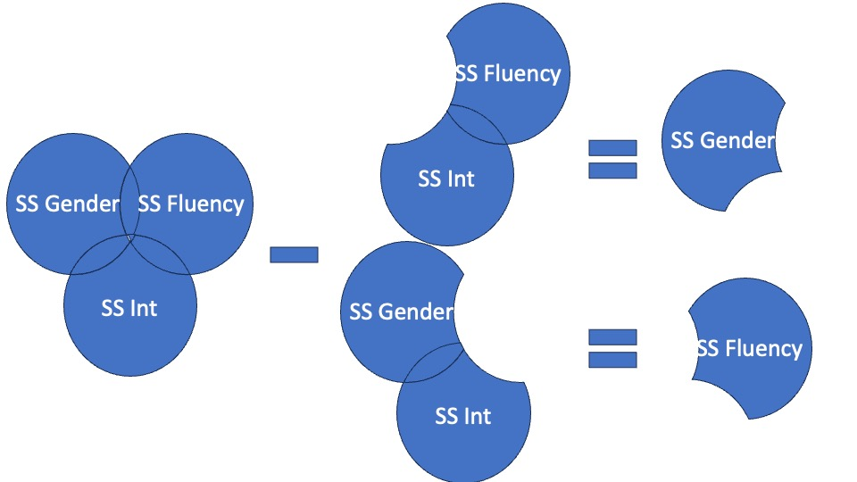

Main effects vs. Simple effects
What is a main effect?
Marginal mean differences
- They tell us what impact a particular factor has, ignoring the impact of the other factor
Princeton University
2023-12-02
Due final exams week
Will post link to Github repository by Wednesday
Similar to our labs
Push everything to the repository
I want a reproducible APA formatted paper
This means:
Questions should be posted via issues from the repository
The effect of X on Y depends on some third variable (moderator)
This tells us about the conditions that facilitate, enhance, or inhibit the effect
Large vs. small
Present vs. absent
Positive vs. negative
LaPaglia, Miller, and Protexter (2022)
Looked at the impact of instructor fluency and gender on test performance (Quiz)
N = 72 (49 females, 23 males)
2 (Fluency: fluent, disfluent) x 2 (Gender: male, female) design
Factorial design
Commonly used to refer to experiments where more than one factor is manipulated
2-way (most common), 3-way, 4-way (don’t), 5-way (please don’t)
In the example above we have two factors:
Fully crossed design
We will see how to formulate in terms of model comparisons:
What is a main effect?
Marginal mean differences
| Gender | Disfluent | Fluent | Marginal |
|---|---|---|---|
| F | 6.69 | 7.85 | 7.27 |
| M | 5.50 | 8.00 | 6.75 |
| Marginal | 6.10 | 7.92 | 7.01 |
| Gender | Disfluent | Fluent | Marginal |
|---|---|---|---|
| F | 6.69 | 7.85 | 7.27 |
| M | 5.50 | 8.00 | 6.75 |
| Marginal | 6.10 | 7.92 | 7.01 |
Simple effects
Conditional mean effects
| Gender | Disfluent | Fluent | Marginal |
|---|---|---|---|
| F | 6.69 | 7.85 | 7.27 |
| M | 5.50 | 8.00 | 6.75 |
| Marginal | 6.10 | 7.92 | 7.01 |
\[\hat{Y}= b_0 + b_1 X + b_2 Z + b_3 X*Z\]
where ( X ) is a dummy coded categorical predictor and ( Z ) is a dummy coded categorical predictor
Testing the simple (conditional effects), not main effects
| Term | Interpretation | Value |
|---|---|---|
| intercept | female disfluent instrutor | 6.69 |
| male-female | female minus male, when disfluent | 5.50-6.69=-1.19 |
| dis fluent-fluent | fluent minus disfluent, when female | 7.85-6.69=1.16 |
| male -female:flue nt-disfluent | (male minus female when disfluent)-(male minus female when fluent) | (6.69−5.50) −(7.85-8.00)=1.35 |
| Gender | Fluency | D1 | D2 | Interaction |
|---|---|---|---|---|
| Female=0 | Disfluent=0 | 0 | 0 | 0 |
| Female=0 | Fluent=1 | 0 | 1 | 0 |
| Male=1 | Disfluent=0 | 1 | 0 | 0 |
| Male=1 | Fluent=1 | 1 | 1 | 1 |
\[\hat{Y}= b_0 + b_1({0}) + b_2({0}) + b_3({0})\] \[\bar Y_{Female,Disfluent} = b_0\]
| Gender | Language | D1 | D2 | Interaction |
|---|---|---|---|---|
| Female=0 | Disfluent=0 | 0 | 0 | 0 |
| Female=0 | Fluent=1 | 0 | 1 | 0 |
| Male=1 | Disfluent=0 | 1 | 0 | 0 |
| Male=1 | Fluent=1 | 1 | 1 | 1 |
\[\hat{Y}= b_0 + b_1({0}) + b_2({1}) + b_3({0})\]
\[\bar Y_{Female,Fluent}= b_0 + b_2\]
| Gender | Language | D1 | D2 | Interaction |
|---|---|---|---|---|
| Female=0 | Disfluent=0 | 0 | 0 | 0 |
| Female=0 | Fluent=1 | 0 | 1 | 0 |
| Male=1 | Disfluent=0 | 1 | 0 | 0 |
| Male=1 | Fluent=1 | 1 | 1 | 1 |
\[\hat{Y}= b_0 + b_1({1}) + b_2({0}) + b_3({0})\] \[\bar Y_{Male,Disfluent} = b_0 + b_1 \]
| Gender | Language | D1 | D2 | Interaction |
|---|---|---|---|---|
| Female=0 | Disfluent=0 | 0 | 0 | 0 |
| Female=0 | Fluent=1 | 0 | 1 | 0 |
| Male=1 | Disfluent=0 | 1 | 0 | 0 |
| Male=1 | Fluent=1 | 1 | 1 | 1 |
\[\hat{Y}= b_0 + b_1({1}) + b_2({1}) + b_3({1})\]
\[\bar Y_{Male,Fluent} = b_0+b_1 + b_2 + b_3 \]
Emmeans\[\hat{Y}= b_0 + b_1 X + b_2 Z + b_3 X*Z\]
\(b_0\): is the overall mean of all cells
\(b_1\): is the main effect of factor A
\(b_2\): is the main effect of factor B
\(b_3\): is the interaction effect
| Term | Interpretation | Value |
|---|---|---|
| intercept | grand mean | 7.01 |
| male-female | female minus male | 7.27-6.75=0.52 |
| di sfluent-fluent | fluent minus disfluent | 7.92-6.10=-1.83 |
| female-male:fl uent-disfluent | (female minus male when disfluent)-(female - male when fluent) | (6.69−5.50) −(7.85-8.00)=-1.35 |
\[ \begin{aligned} F_A &= \frac{MS_A}{MS_{within}} \\ \\ F_B &= \frac{MS_B}{MS_{within}} \\ \\ F_{AxB} &= \frac{MS_{AxB}}{MS_{within}} \\ \end{aligned} \]
The two main effects and the interaction represent three independent questions we can ask about the data. We have three null hypotheses to test
One null hypothesis refers to the marginal row means (Gender)
| Disfluent | Fluent | Marginal | ||
|---|---|---|---|---|
| F | \(\mu_{11}\) | \(\mu_{12}\) | \(\mu_{1.}\) | |
| M | \(\mu_{21}\) | \(\mu_{22}\) | \(\mu_{2.}\) | |
| Marginal | \(\mu_{.1}\) | \(\mu_{.2}\) | \(\mu_{..}\) |
| Disfluent | Fluent | Marginal | ||
|---|---|---|---|---|
| F | \(\mu_{11}\) | \(\mu_{12}\) | \(\mu_{1.}\) | |
| M | \(\mu_{21}\) | \(\mu_{22}\) | \(\mu_{2.}\) | |
| Marginal | \(\mu_{.1}\) | \(\mu_{.2}\) | \(\mu_{..}\) |
\[ \begin{aligned} H_0&: \mu_{1.} = \mu_{2.} = \dots = \mu_{R.}\\ H_1&: \text{Not true that }\mu_{1.} = \mu_{2.} = \dots = \mu_{R.} \end{aligned} \]
| Disfluent | Fluent | Marginal | ||
|---|---|---|---|---|
| F | \(\mu_{11}\) | \(\mu_{12}\) | \(\mu_{1.}\) | |
| M | \(\mu_{21}\) | \(\mu_{22}\) | \(\mu_{2.}\) | |
| Marginal | \(\mu_{.1}\) | \(\mu_{.2}\) | \(\mu_{..}\) |
\[ \begin{aligned} \alpha_a&= \mu_{a.} - \mu_{..} \\ H_0&: \alpha_1 = \alpha_2 = \dots = \alpha_R = 0\\ H_1&: \text{At least one }\alpha_r \neq 0 \end{aligned} \]
| Disfluent | Fluent | Marginal | ||
|---|---|---|---|---|
| F | \(\mu_{11}\) | \(\mu_{12}\) | \(\mu_{1.}\) | |
| M | \(\mu_{21}\) | \(\mu_{22}\) | \(\mu_{2.}\) | |
| Marginal | \(\mu_{.1}\) | \(\mu_{.2}\) | \(\mu_{..}\) |
\[ \begin{aligned} \beta_b&= \mu_{.b} - \mu_{..} \\ H_0&: \beta_1 = \beta_2 = \dots = \beta_C = 0\\ H_1&: \text{At least one }\beta_c \neq 0 \end{aligned} \]
The interaction null hypothesis can then be stated as follows:
| Disfluent | Fluent | Marginal | ||
|---|---|---|---|---|
| F | \(\mu_{11}\) | \(\mu_{12}\) | \(\mu_{1.}\) | |
| M | \(\mu_{21}\) | \(\mu_{22}\) | \(\mu_{2.}\) | |
| Marginal | \(\mu_{.1}\) | \(\mu_{.2}\) | \(\mu_{..}\) |
\[ \begin{aligned} (\alpha\beta)_{ab}&= \mu_{ab} - \alpha_a - \beta_b - \mu_{..} \\ H_0&: (\alpha\beta)_{11} = (\alpha\beta)_{12} = \dots = (\alpha\beta)_{AB} = 0\\ H_1&: \text{At least one }(\alpha\beta)_{ab} \neq 0 \end{aligned} \]
\[ \begin{aligned} SS_{\text{total}} &= \sum_{a=1}^A\sum_{b=1}^B\sum_{i=1}^{N_{ab}}(Y_{abi}-\bar{Y}_{...})^2 \\ SS_{\text{Within}} &= \sum_{a=1}^A\sum_{b=1}^B\sum_{i=1}^{N_{ab}}(Y_{abi}-\bar{Y}_{ab.})^2 \\ SS_A &= BN\sum_{a=1}^A(\bar{Y}_{a..}-\bar{Y}_{...})^2\\ SS_B &= AN\sum_{b=1}^B(\bar{Y}_{.b.}-\bar{Y}_{...})^2\\ SS_{AB} &= N\sum_{a=1}^A\sum_{b=1}^B(\bar{Y}_{ab.}-\bar{Y}_{a..}-\bar{Y}_{.b.}+\bar{Y}_{...})^2 \\ \end{aligned}\]
\[ SS_{\text{total}} = SS_{\text{within}} + SS_R + SS_C + SS_{RxC}\]
afex package to run (my favorite)| Effect | df | MSE | F | pes | p.value |
|---|---|---|---|---|---|
| Gender | 1, 47 | 3.05 | 1.12 | .023 | .294 |
| Fluency | 1, 47 | 3.05 | 13.92 *** | .229 | <.001 |
| Gender:Fluency | 1, 47 | 3.05 | 1.89 | .039 | .176 |
| term | estimate | std.error | statistic | p.value | conf.low | conf.high |
|---|---|---|---|---|---|---|
| (Intercept) | 7.0096154 | 0.2447905 | 28.635161 | 0.0000000 | 6.5171604 | 7.5020704 |
| Gender1 | 0.5192308 | 0.4895810 | 1.060561 | 0.2943090 | -0.4656792 | 1.5041407 |
| Fluency1 | -1.8269231 | 0.4895810 | -3.731605 | 0.0005124 | -2.8118330 | -0.8420131 |
| Gender1:Fluency1 | 1.3461538 | 0.9791620 | 1.374802 | 0.1757121 | -0.6236660 | 3.3159737 |
An examination of one factor at the levels of another
Our example:
Difference in quiz performance for videos with Males and Females at Disfluent and Fluent
\[F=\frac{MS_{gender_{oneway}}}{MS_{W_{omnibus}}}\]
Note
Using error from entire model is preferable
No Gender effect for Fluency, F(1, 46) = 0.29, p = .867
No Gender effect for Disfluency, F(1, 46) = 0.596, p = .867
$emmeans
Fluency = Disfluent:
Gender emmean SE df lower.CL upper.CL
F 6.69 0.485 47 5.72 7.67
M 5.50 0.504 47 4.49 6.51
Fluency = Fluent:
Gender emmean SE df lower.CL upper.CL
F 7.85 0.485 47 6.87 8.82
M 8.00 0.485 47 7.03 8.97
Confidence level used: 0.95
$contrasts
Fluency = Disfluent:
contrast estimate SE df t.ratio p.value
F - M 1.192 0.699 47 1.705 0.0948
Fluency = Fluent:
contrast estimate SE df t.ratio p.value
F - M -0.154 0.685 47 -0.225 0.8233-Report \(\eta_p^2\) or \(\omega_2^2\) for Main Effects and interactions
# Effect Size for ANOVA (Type I)
Parameter | Eta2 (partial) | 95% CI
----------------------------------------------
Gender | 0.02 | [0.00, 1.00]
Fluency | 0.23 | [0.07, 1.00]
Gender:Fluency | 0.04 | [0.00, 1.00]
- One-sided CIs: upper bound fixed at [1.00].Eta2 (partial) | 95% CI
-----------------------------
6.21e-04 | [0.00, 1.00]
0.01 | [0.00, 1.00]
- One-sided CIs: upper bound fixed at [1.00].d | 95% CI
--------------------
0.05 | [-0.53, 0.63]
0.23 | [-0.35, 0.81]Type 1 - Sequential
Type 2 - Hierarchical
Type 3 - Simultaneous
| Disfluent | Fluent | |
|---|---|---|
| F | 13 | 13 |
| M | 12 | 13 |
By default R aov calculates Type I (SS)
Sequential (order listed in model)
First assign a maximum of variation to variable A
In the remaining variation, assign the maximum of variation to variable B
In the remaining variation, assign the maximum of variation to the interaction effect
Assign the rest to the residual SS
Can change depending on order terms are placed in the model!
Does Gender contribute significantly over and above an intercept-only model?
| Restricted/Null model: | `Quiz ~ 1` |
| Full/Alternative model: | `Quiz ~ Gender` |
| term | df.residual | rss | df | sumsq | statistic | p.value |
|---|---|---|---|---|---|---|
| Quiz ~ 1 | 50 | 193.9216 | NA | NA | NA | NA |
| Quiz ~ Gender | 49 | 191.1154 | 1 | 2.806184 | 0.7194764 | 0.4004403 |
Does Fluency contribute meaningfully to the model over and above Gender?
| Restricted/Null model: | `Quiz ~ Gender` |
| Full/Alternative model: | `Quiz ~ Gender + Fluency` |
| term | df.residual | rss | df | sumsq | statistic | p.value |
|---|---|---|---|---|---|---|
| Quiz ~ Gender | 49 | 191.1154 | NA | NA | NA | NA |
| Quiz ~ Gender + Fluency | 48 | 149.2308 | 1 | 41.88462 | 13.47216 | 0.0006072 |
Does the interaction between Fluency and Gender contribute meaningfully to the model over and above the main effects?
| Restricted/Null model: | `Quiz ~ Gender + Fluency` |
| Full/Alternative model: | `Quiz ~ Gender + Fluency + Gender:Fluency` |
| term | df.residual | rss | df | sumsq | statistic | p.value |
|---|---|---|---|---|---|---|
| Quiz ~ Gender + Fluency | 48 | 149.231 | NA | NA | NA | NA |
| Quiz ~ Gender + Fluency + Fluency:Gender | 47 | 143.462 | 1 | 5.769 | 1.89 | 0.176 |
| term | df | sumsq | meansq | statistic | p.value |
|---|---|---|---|---|---|
| Gender | 1 | 2.806184 | 2.806184 | 0.919345 | 0.3425536 |
| Fluency | 1 | 41.884615 | 41.884615 | 13.721984 | 0.0005569 |
| Gender:Fluency | 1 | 5.769231 | 5.769231 | 1.890080 | 0.1757121 |
| Residuals | 47 | 143.461538 | 3.052373 | NA | NA |
Type 2
The Anova() function from the car package provides Type II sums of squares
Tests main effects
\[SS(A | B) A\]
\[SS(B | A) B\]

Note
Use Type II if you don’t care about interaction
| Reduced/Null model: | `Quiz ~ Fluency` |
| Full/Alternative model: | `Quiz ~ Fluency + Gender` |
| Reduced/Null model: | `Quiz ~ Gender` |
| Full/Alternative model: | `Quiz ~ Gender + Fluency` |
Anova function in car package can handle these casesType III
Treats main effects and interactions simultaneously
Fit full model and remove effect of interest
Preferable if unequal cell sizes and care about interaction

| Reduced/Null model: | `Quiz ~ Fluency + Gender:Fluency` |
| Full/Alternative model: | `Quiz ~ Gender + Fluency + Gender:Fluency` |
| Reduced/Null model: | `Quiz ~ Gender + Gender:Fluency` |
| Full/Alternative model: | `Quiz ~ Gender + Fluency + Gender:Fluency` |
| Reduced/Null model: | `Quiz ~ Gender + Fluency` |
| Full/Alternative model: | `Quiz ~ Gender + Fluency + Gender:Fluency` |
| term | sumsq | df | statistic | p.value |
|---|---|---|---|---|
| (Intercept) | 2502.861852 | 1 | 819.972435 | 0.0000000 |
| Gender | 3.433281 | 1 | 1.124791 | 0.2943090 |
| Fluency | 42.503925 | 1 | 13.924878 | 0.0005124 |
| Gender:Fluency | 5.769231 | 1 | 1.890080 | 0.1757121 |
| Residuals | 143.461538 | 47 | NA | NA |
| Effect | Type I | Type II | Type III |
|---|---|---|---|
| A | SS(A) | SS(A|B) | SS(A|B,AB) |
| B | SS(B|A) | SS(B|A) | SS(B|A,AB) |
| A:B | SS(AB|A,B) | SS(AB|A,B) | SS(AB|A,B) |
Superpowerstring <- "2b*2b"
n <- 20
# We are thinking of running 100 people in each condition
mu <- c(5.50, 8.00, 6.69, 7.85)
# Enter means in the order that matches the labels below.
# In this case, control, pet.
sd <-c(2.39,0.71,1.93,1.57)
labelnames <- c("Gender", "male", "female", "Fluency", "Disfluency", "Fluency") #
# the label names should be in the order of the means specified above.#nsims = 100 is not enough
simulation_result <- ANOVA_power(design_result,
alpha_level = .05,
nsims = 100,
verbose = FALSE)
simulation_resultPower and Effect sizes for ANOVA tests
power effect_size
anova_Gender 28 0.03316
anova_Fluency 100 0.22007
anova_Gender:Fluency 37 0.04843
Power and Effect sizes for pairwise comparisons (t-tests)
power
p_Gender_male_Fluency_Disfluency_Gender_male_Fluency_Fluency 100
p_Gender_male_Fluency_Disfluency_Gender_female_Fluency_Disfluency 40
p_Gender_male_Fluency_Disfluency_Gender_female_Fluency_Fluency 98
p_Gender_male_Fluency_Fluency_Gender_female_Fluency_Disfluency 72
p_Gender_male_Fluency_Fluency_Gender_female_Fluency_Fluency 5
p_Gender_female_Fluency_Disfluency_Gender_female_Fluency_Fluency 45
effect_size
p_Gender_male_Fluency_Disfluency_Gender_male_Fluency_Fluency 1.4830
p_Gender_male_Fluency_Disfluency_Gender_female_Fluency_Disfluency 0.5780
p_Gender_male_Fluency_Disfluency_Gender_female_Fluency_Fluency 1.1963
p_Gender_male_Fluency_Fluency_Gender_female_Fluency_Disfluency -0.8776
p_Gender_male_Fluency_Fluency_Gender_female_Fluency_Fluency -0.1482
p_Gender_female_Fluency_Disfluency_Gender_female_Fluency_Fluency 0.6276Sommet, N., Weissman, D. L., Cheutin, N., & Elliot, A. J. (2023). How many participants do I need to test an interaction? Conducting an appropriate power analysis and achieving sufficient power to detect an interaction.Advances in Methods and Practices in Psychological Science, 6(2), 1-21.https://doi.org/10.1177/25152459231178728
I would report the three effects from this model as follows:
Main effect 1
Main effect 2
Interaction
Figure visualizing either the main effects (if interaction is not significant) or interaction
Avoid them if not theoretically motivated
Testing interactions require lots of data
afex::aov_ez (uses Type III SS)PSY 503: Foundations of Statistics in Psychology